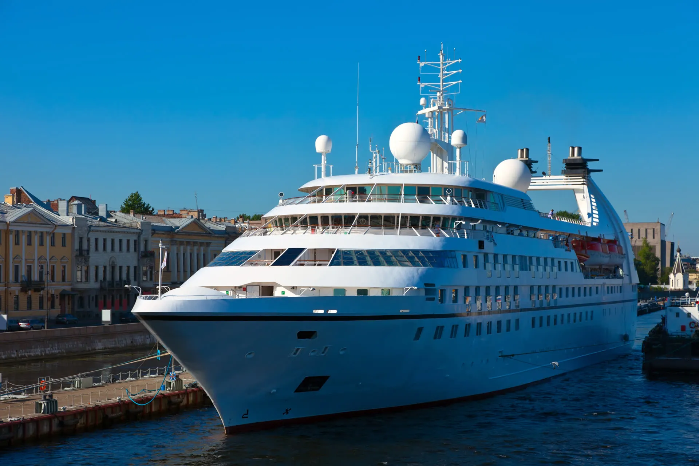
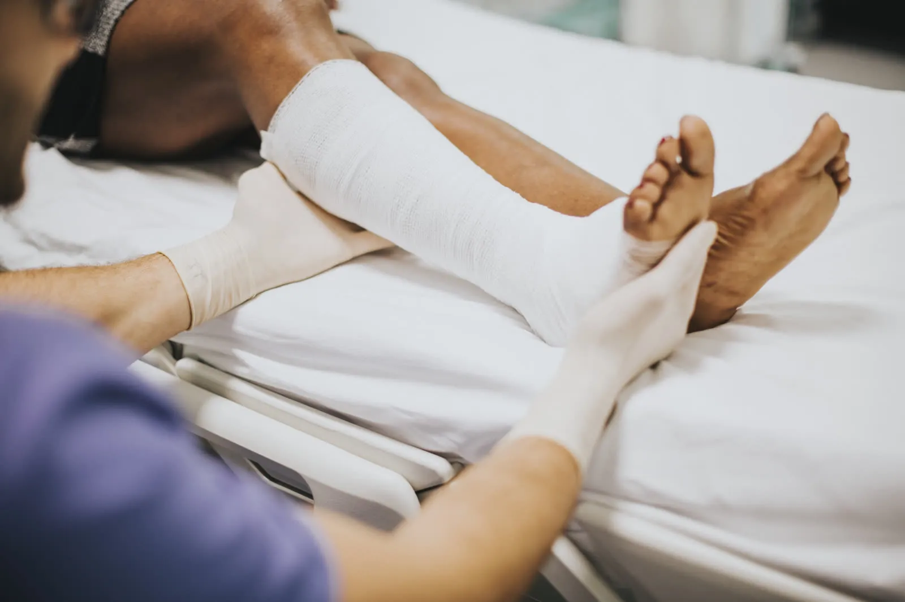
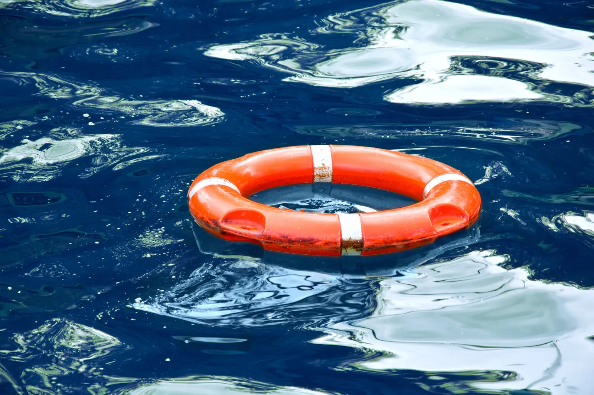
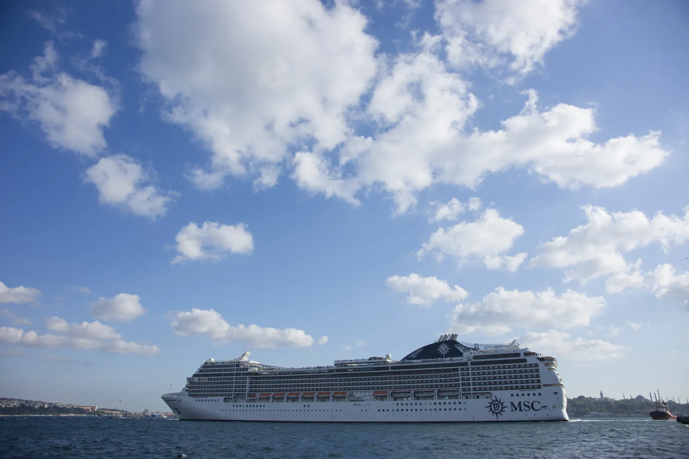

Servicios
Representamos a pasajeros y tripulación lesionados a bordo del buque y en tierra. Si su situación no aparece en la lista, pregúntenos, probablemente la manejamos.
Cuando el viaje sale mal.
Si resultó lesionado como huésped en un crucero, estos son los casos que manejamos con más frecuencia.

Resbalones, tropiezos y caídas a bordo
Cubiertas mojadas, zonas de piscina, escaleras y pasillos mal mantenidos que provocan caídas graves.
Más informaciónLesiones en excursiones en tierra
Lesiones en excursiones vendidas por el crucero: buceo de superficie, tirolesas, embarcaciones y tours.
Más informaciónNegligencia médica en el mar
Atención tardía, omitida o deficiente de la enfermería del buque cuando más importaba.
Más informaciónAgresiones y delitos a bordo
Seguridad insuficiente, servicio excesivo de alcohol y mala conducta de la tripulación o de pasajeros.
Más información
Caídas por la borda y ahogamientos
Incidentes de personas que caen por la borda, ahogamientos en piscinas y toboganes de agua, y fallas en responder o rescatar.
Más información
Muerte por negligencia en el mar
Representación compasiva y decidida para las familias que perdieron a un ser querido en un crucero.
Más informaciónProtegemos a quienes trabajan en el mar.
Los miembros de la tripulación tienen derechos específicos bajo el derecho marítimo. Ayudamos a los marinos lesionados a bordo del buque.
Reclamos bajo la Ley Jones
Compensación para marinos lesionados por la negligencia de un empleador o compañero de trabajo a bordo de un buque.
Más informaciónManutención y cura (Maintenance & Cure)
Prestaciones de manutención diaria y atención médica que se deben a la tripulación que enferma o se lesiona en servicio.
Más información
Innavegabilidad del buque
Reclamos cuando un buque, su equipo o su tripulación no son razonablemente aptos para su propósito.
Más informaciónLey de Muerte en Altamar (DOHSA)
Recursos federales para las familias cuando ocurre una muerte más allá de las aguas territoriales de EE. UU.
Más informaciónRepresentamos tanto a pasajeros como a tripulación, incluidos los marinos que presentan reclamos bajo la Ley Jones, manutención y cura, innavegabilidad y la Ley de Muerte en Altamar.
¿No sabe cuál se aplica a su caso?
Cuéntenos qué pasó y lo orientaremos en la dirección correcta, sin costo y sin compromiso.
Solicite una consultaVisítenos
The Wells Fargo Center
333 SE 2nd Ave., Suite 2000
Miami, FL 33131
Representamos clientes en todo el país y el mundo